7 月 2 日：LeVLJEPA 等视觉表征论文归档
本页按日期归档近期论文，保留优先级、主题、来源与方法线索，方便回看同一批工作的研究脉络。
先读 LeVLJEPA。把 JEPA 式非对比学习直接推到端到端图文预训练，目标是更好的 dense visual tokens。 其余论文按 P1/P2 与主题顺序扫读，重点看方法图、消融设置和是否能迁移到通用视觉表征。
论文索引
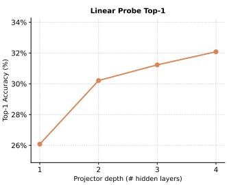
LeVLJEPA: End-to-End Vision-Language Pretraining Without Negatives
高相关；详见方法、贡献和实验边界。
方法：把 JEPA 式非对比学习直接推到端到端图文预训练，目标是更好的 dense visual tokens
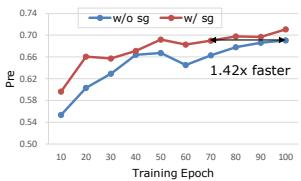
MEPA: Multi-Scale Representation Alignment for Visual Autoregressive Modeling with Mixture of Experts
高相关；详见方法、贡献和实验边界。
方法：针对 visual autoregressive 模型的多尺度表征冲突，用自监督特征对齐和 MoE 路由修补早期语义
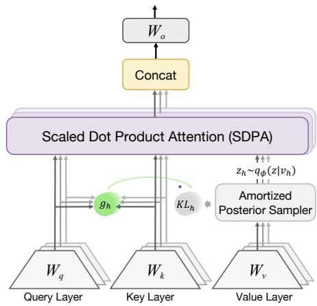
Information-Regularized Attention for Visual-Centric Reasoning
高相关；详见方法、贡献和实验边界。
方法：把 VLM hallucination/grounding 失败追到视觉信息注入失控，并给出 attention-level 表征正则
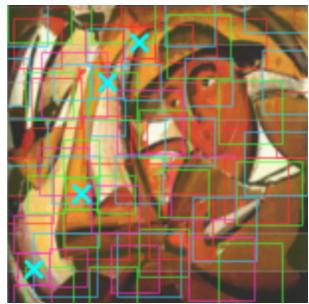
SpiralFovea: Input-Adaptive Foveated Tokenization as a Third Lever of Resource-Adaptive Inference
高相关；详见方法、贡献和实验边界。
方法：把“输入 token 怎么切”提升为资源自适应第三杠杆，尤其指出 self-supervised foundation backbones 最受益
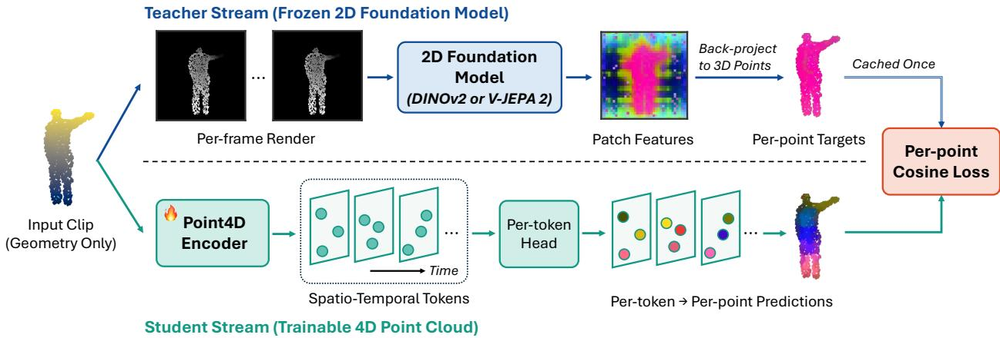
Cross4D-JEPA: Dense Cross-modal Correspondence Distillation for 4D Point Cloud Representation Learning
中高相关；详见方法、贡献和实验边界。
方法：虽然是 4D point cloud，但核心是把 DINOv2/V-JEPA dense patch semantics 蒸馏到动态几何编码器
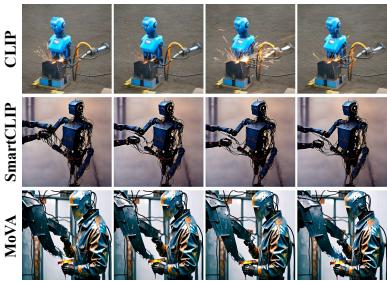
MoVA: Learning Asymmetric Dual Projections for Modular Long Video-Text Alignment
中高相关；详见方法、贡献和实验边界。
方法：从 CLIP 式视频文本对比预训练的 entanglement 入手，处理长视频和长 caption 的局部相关性
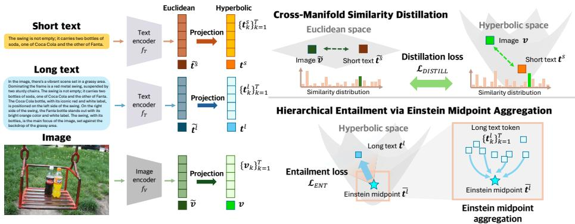
HyFL-CLIP: Hyperbolic Fine-Tuning of CLIP for Robust Long-Context Understanding
中高相关；详见方法、贡献和实验边界。
方法：用 hyperbolic geometry 处理 CLIP 长文本上下文和层级语义，对图文表征鲁棒性有直接参考
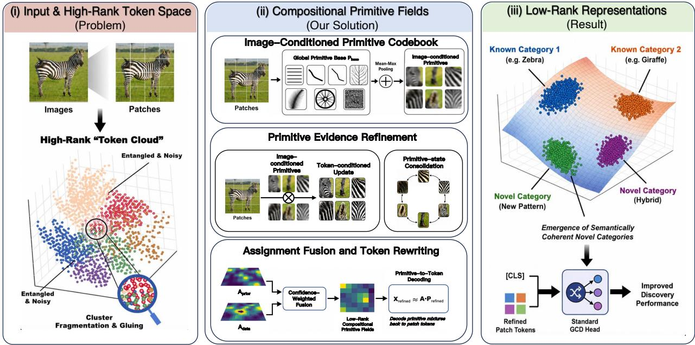
Identifying Latent Concepts and Structures for Generalized Category Discovery
中高相关；详见方法、贡献和实验边界。
方法：把 open-world category discovery 的瓶颈定位为高秩、纠缠的 patch-token 表征，并显式构造 compositional primitive field
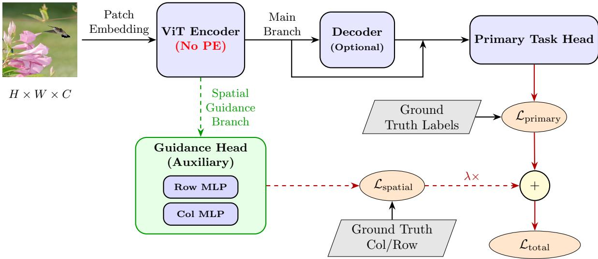
Active Spatial Guidance: Eliminating Injected Positional Mechanisms in Vision Transformers
中高相关；详见方法、贡献和实验边界。
方法：讨论 ViT 是否必须注入 positional mechanism，直接关系到自监督 backbone 的空间归纳偏置
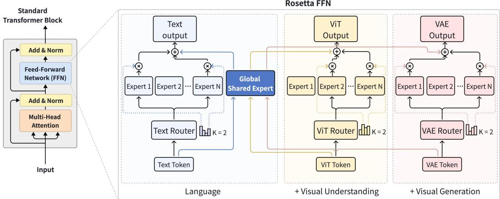
Rosetta: Composable Native Multimodal Pretraining
中高相关；详见方法、贡献和实验边界。
方法：聚焦新模态接入时的 representation overwriting，适合放进 multimodal foundation model 训练路线
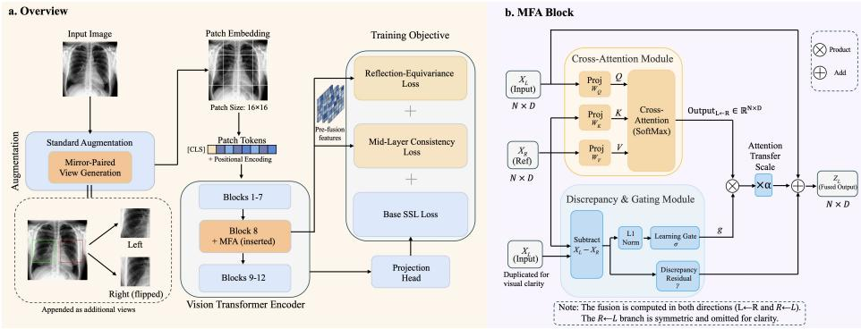
Mirror-Fusion Attention for Reflection-Aware Self-Supervised Representation Learning
中相关；详见方法、贡献和实验边界。
方法：用 mirror-paired views 和 token-level mirror fusion 修补过强 flip invariance，方法可迁移但数据有明显垂直属性
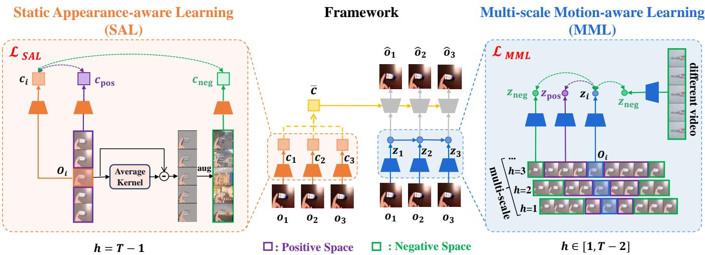
From Pixels to Temporal Correlations: Learning Informative Representations for Reinforcement Learning Pre-training
中相关；详见方法、贡献和实验边界。
方法：从 action-free internet videos 学表示，虽然落点是 RL，但核心是视频自监督如何避免只保留静态像素
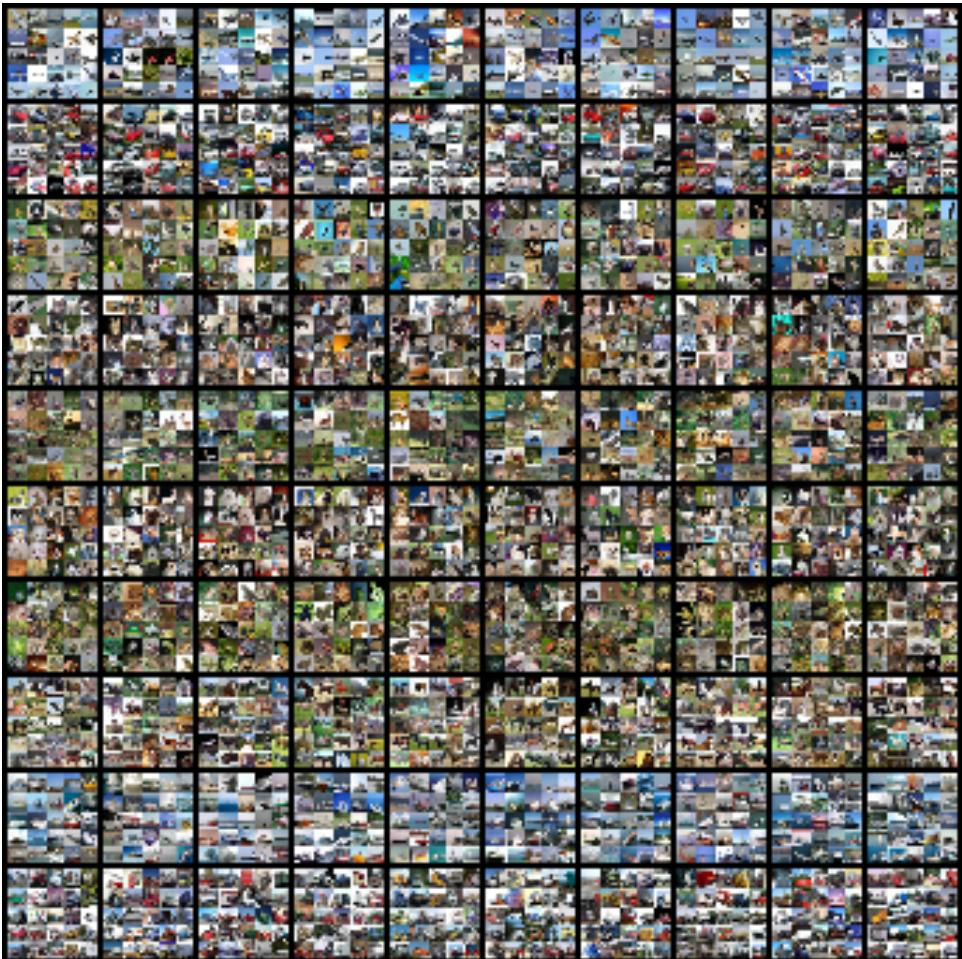
Condensing Large-Scale Datasets Directly with Minimal Information Loss
中相关；详见方法、贡献和实验边界。
方法：不是 SSL 方法本身，但直接服务大规模视觉预训练/下游训练的数据效率和合成数据保真
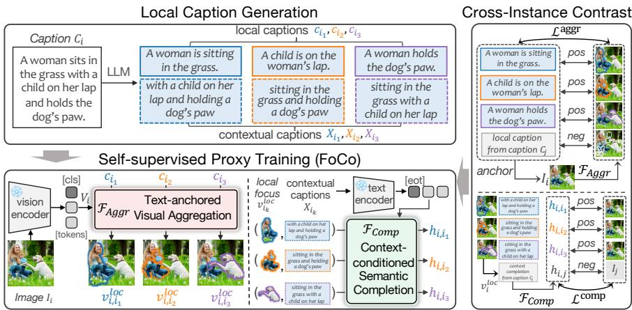
Learning to Compose: Revisiting Proxy Task Design for Zero-Shot Composed Image Retrieval
中相关；详见方法、贡献和实验边界。
方法：偏检索任务，但 proxy-task 设计能参考到图文表征组合能力
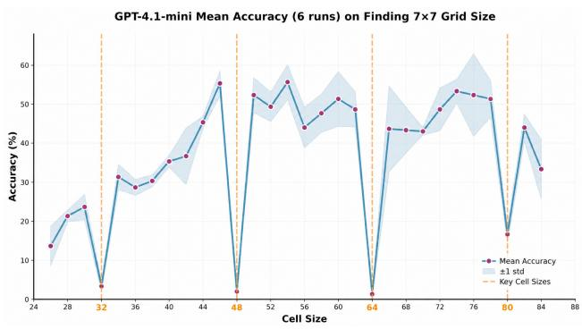
Steal the Patch Size: Adversarially Manipulate Vision-Language Models
中相关；详见方法、贡献和实验边界。
方法：安全论文，但黑盒恢复 VLM patch size / preprocessing 的 side channel 很能说明 tokenizer 接口的可见性